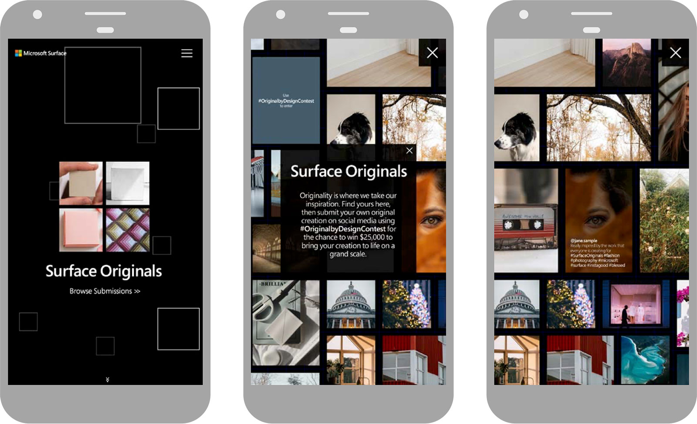
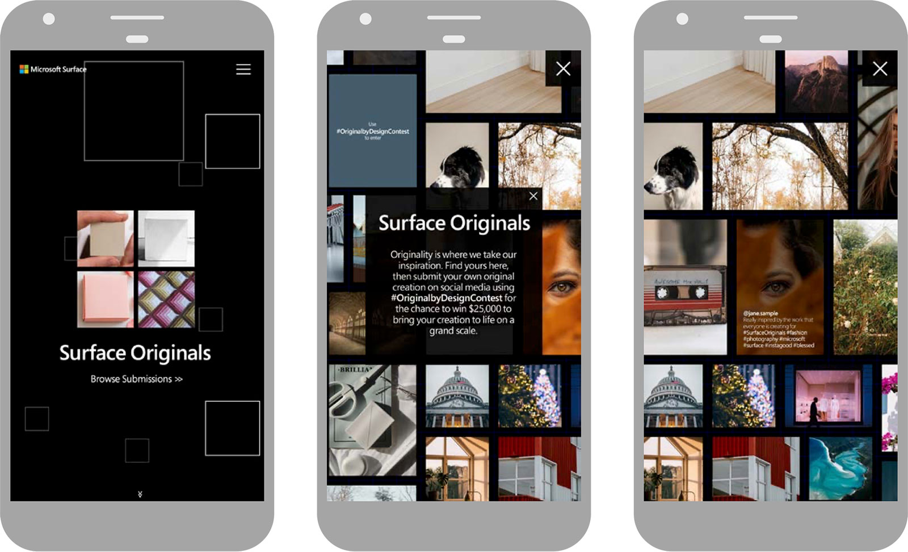

Original by Design
Client: Microsoft Surface
Original by design embraces the open-ended nature of creativity. But because there are so many apps, channels, and platforms to express oneself, it's easy for that content to get lost in the shuffle. We made sure this didn't happen by creating a web experience that was equal parts creative, innovative, informative, and of course, inspirational. Starting with the iconic four-square Surface logo, users scolled into a rich, parallax site that showcased all of the campaign's video content, short bios of featured creators, and more. Inspired users could also add their oringality to the mix by posting their creativity to Instagram and see it featured alongside other creators from around the world.
 

Visit here for more details on the campaign.